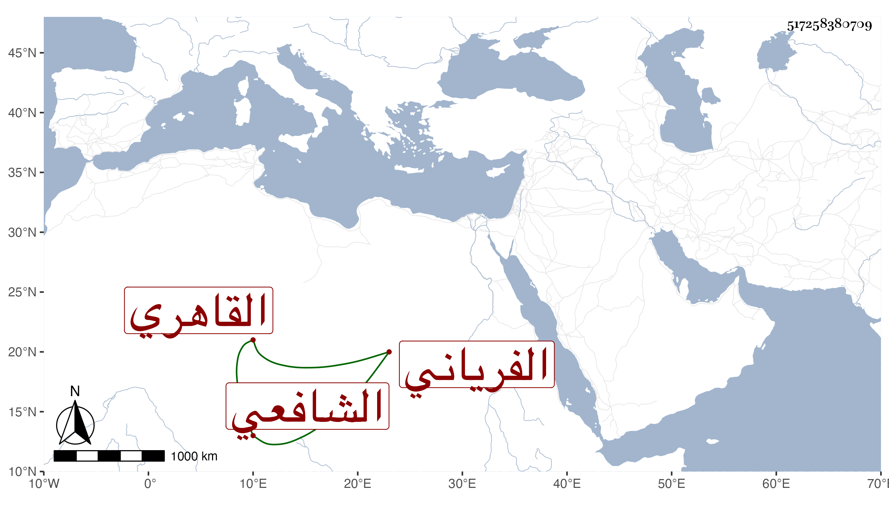

0902Sakhawi.DawLamic.ITO20230111-ara1.EIS1600.517258380709
Biography ID: 517258380709
768
عبد القادر بن الشمس محمد بن الجمال عبد الله بن الشهاب أحمد الفرياني الأصل القاهري الشافعي سبط ابن الخص . ممن سمع في البخاري بالظاهرية وتردد إلي يسيرا وكذا للبقاعي بل نسخ له ، وخطب وجلس بمجلس التوتة من المقس شاهدا وتنزل في الصوفية .
